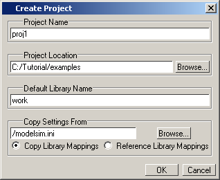
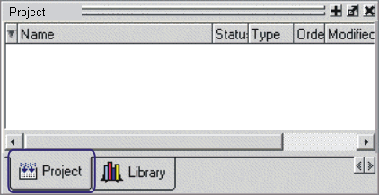
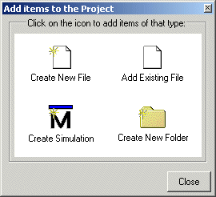

To create a new Questa SIM project, you open
one from scratch and specify the details of its initial configuration.
Procedure
- Select to create
a new project. This opens the Create Project dialog
box, as shown in Figure 1.
- Specify a project name, location,
and default library name. You can generally leave the Default
Library Name field set to "work" (as shown). The name
you specify will be used to create a working library subdirectory within
the Project Location. The Copy Settings From field allows
you to import library settings from a selected .ini file instead
of copying them directly into the project.
Figure 1. Create Project Dialog Box
- Click OK.
Results
A blank Project window opens in the
Main window (Figure 2)
Figure 2. Project Window Detail
and the Add Items to the
Project dialog box opens. (Figure 3)
Figure 3. Add items to the Project
Dialog
The name of the current project appears
at the bottom bar of the Main window.
If you exit Questa SIM with
a project open, Questa SIM automatically
opens that same project upon startup.
You can open a different or existing
project by selecting and choosing
Project Files from the Files of type dropdown
list.
To close a project file, right-click
in the Project window and choose Close Project.
This closes the Project window but leaves the Library window open.
You cannot close a project while a simulation is in progress.